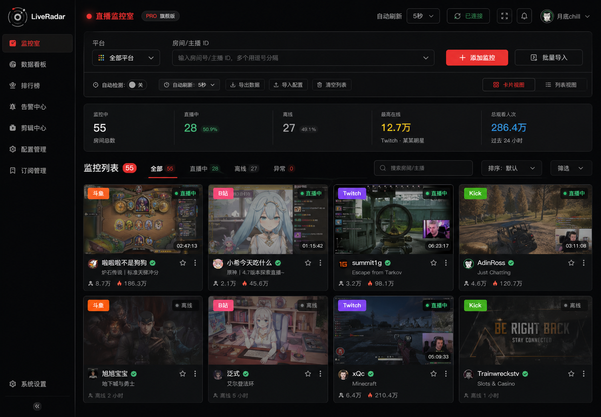
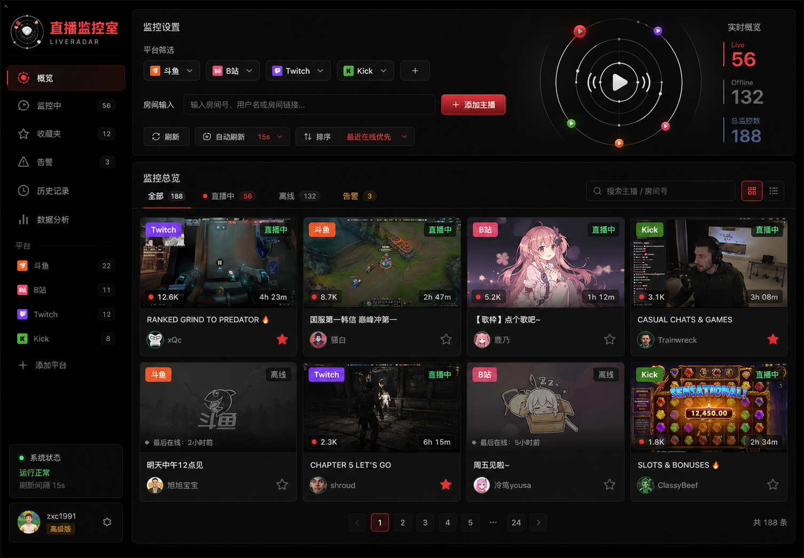
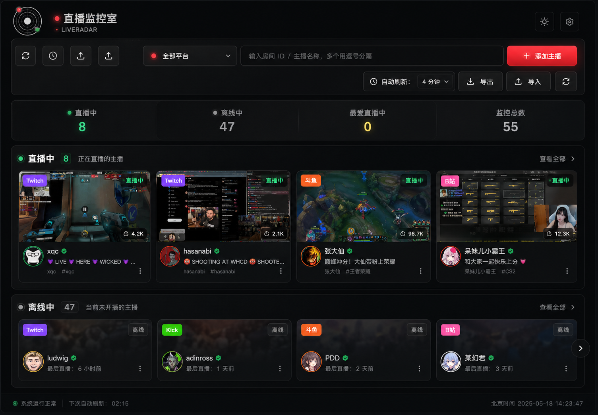
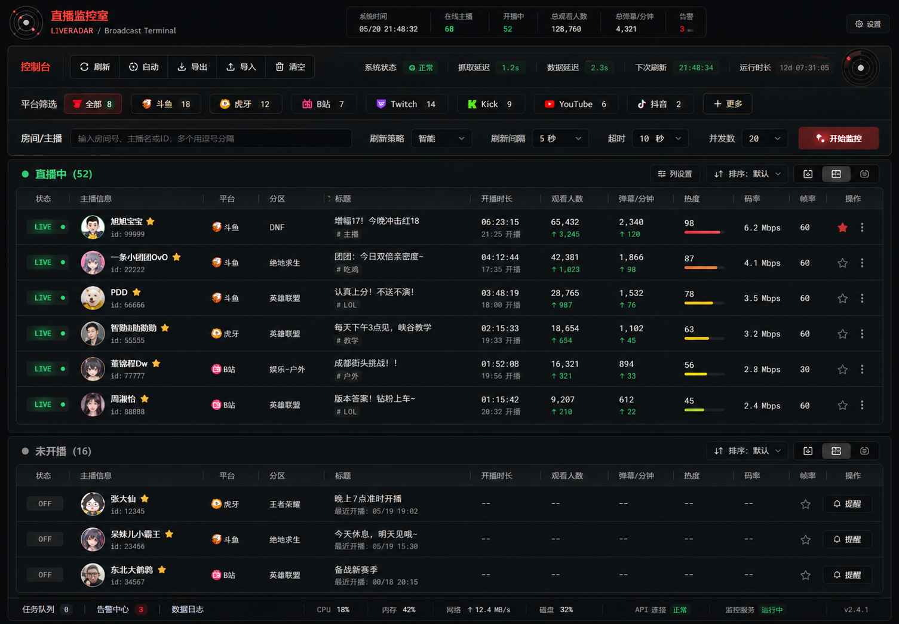
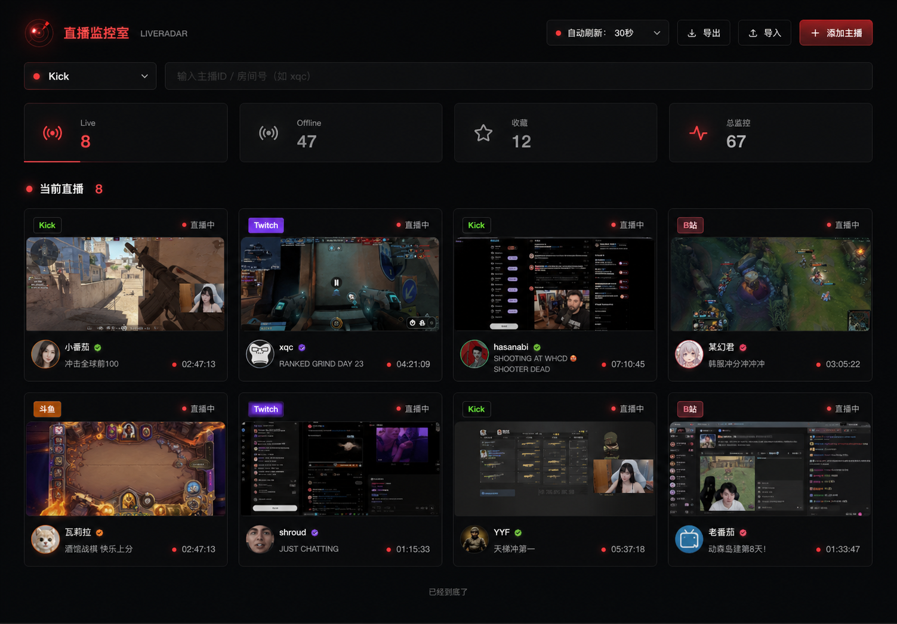
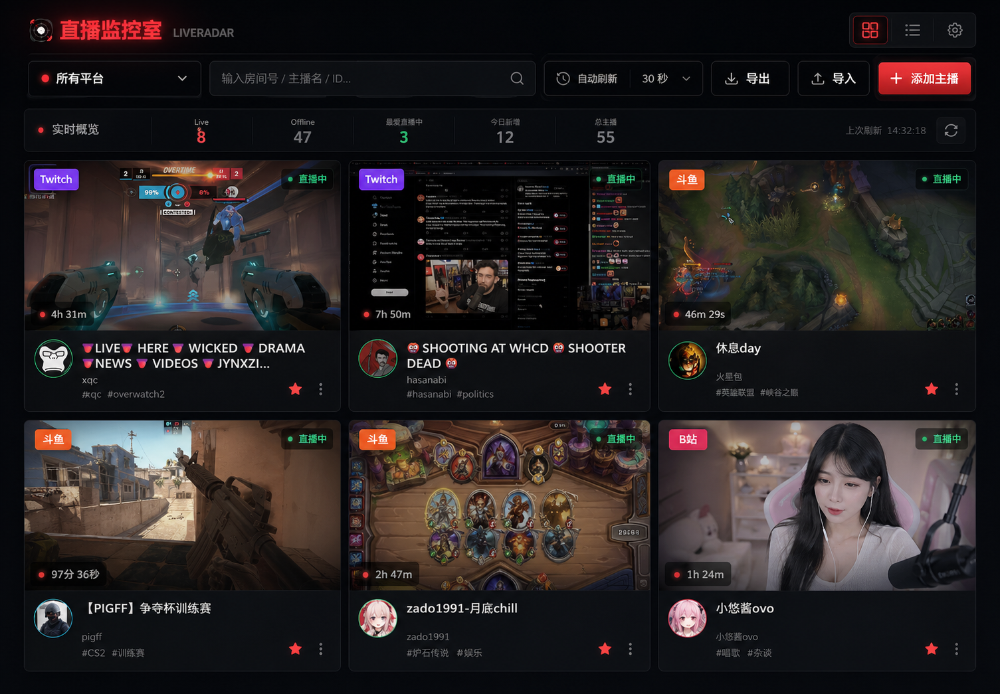
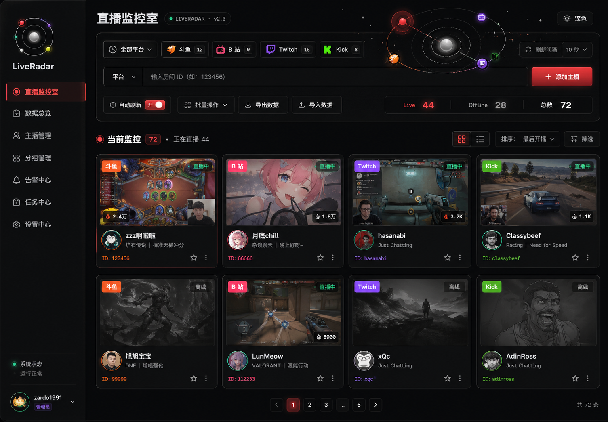
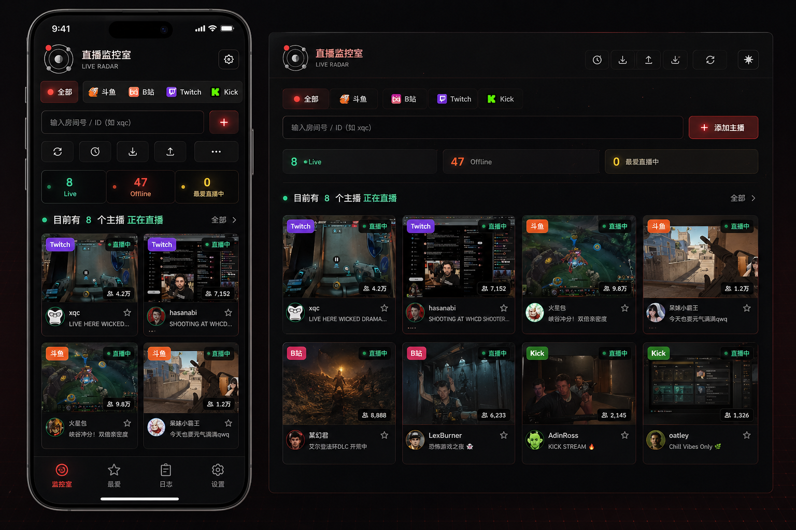

黑色基底、星系 logo、LED 红点已经具备记忆点。建议继续把红色限定为“实时信号”， 避免在边框、按钮、背景和标题上同时大面积出现。
保留核心，减少噪声Current Page Audit
当前主页视觉架构判断
当前版本已经形成了明确的黑色监控台气质，问题不在“有没有设计感”，而在高密度控件、 动效、红色信号和平台标签同时出现时，视觉优先级会互相竞争。
现在的顶部区域承载平台选择、输入、添加、刷新、导入导出、自动倒计时，桌面可用， 但移动端容易形成两到三层挤压。未来需要把“常用动作”和“低频动作”分层。
需要信息架构重排Live / Offline / 最爱直播中是有效的监控指标，但当前视觉权重接近装饰条。 建议变成更像系统状态栏的轻量结构，并保留绿色只代表真实直播状态。
语义优先卡片 3D 和空间化缩略图是当前最强体验资产。下一阶段应把卡片拆成稳定规范： 缩略图、平台、状态、标题、主播、收藏、删除各自有固定层级。
值得产品化动效已经从“装饰”进入“品牌体验”阶段，但刷新、加载、头像、卡片、Logo 同时动时会显得忙。 未来每个状态只保留一个主动画信号。
克制比更多更高级iPhone 端真正的问题不是卡片，而是顶部控制区和统计条的节奏。建议采用移动优先的 sticky mini command bar，再把输入与低频工具放入展开层。
需要专门布局Visual Principles
未来美术原则
这四条原则用于约束后续所有方向，避免每次局部优化后产生新的视觉冲突。
01
红色只做信号
红色是直播状态、品牌红点和危险提醒，不是通用装饰色。
02
黑色要有层次
使用石墨黑、纯黑、玻璃黑、柔和边线建立空间，而不是单一黑色铺满。
03
截图是主视觉
LiveRadar 的核心不是按钮，而是直播画面监控；卡片缩略图必须占据足够权重。
04
动效服务判断
动效应帮助用户判断直播、刷新、收藏、平台来源，而不是不断争夺注意力。
8 Directions
八个主页美术优化方向
每个方向都以当前 LiveRadar 信息结构为基础，只探索未来视觉架构，不代表已经进入开发。 评分是本轮审核团队对“品牌适配度 + 可落地性 + 未来延展性”的综合判断。

DIRECTION 01
推荐 9.0 / 10
Noir Command Center
更克制的黑色指挥台布局，把 LiveRadar 变成“开机就能判断全局”的监控面板。 它适合当前单人高频巡检场景，重点是效率、稳定和视觉安静。
适合保留当前 3D 卡片、统一 5 分钟刷新、Live/Offline 指标、LED 红点。
建议替换过重红色边框、复杂刷新动效、移动端拥挤工具条。
实施成本中等。主要是 CSS 架构和顶部区域重排，逻辑改动较少。
风险过度克制后可能显得冷，需要用细微光感和状态色保持生命力。

DIRECTION 02
推荐 8.6 / 10
Orbital Live System
围绕星系 logo 建立轨道式信息层级，让主播、平台、直播状态都像轨道节点一样被监控。 这是最能延展品牌世界观的方向。
适合保留当前星系 logo、平台颜色、收藏主播、卡片 3D 层次。
建议替换普通统计条可升级为轨道状态区，但不要牺牲扫描效率。
实施成本中高。需要新增轨道状态组件和更完整的品牌动效规范。
风险如果轨道元素过多，会从监控工具变成视觉展示页。

DIRECTION 03
推荐 8.1 / 10
Glass Radar Deck
用透明玻璃面板和弱边框减少厚重感，让页面像一个低照度雷达桌面。 适合在不改变功能结构的前提下提升现代感。
适合保留当前黑色主调、卡片布局、空间化缩略图和平台标签。
建议替换强边框可改成玻璃边线，背景网格应更轻。
实施成本中。CSS 层面的面板、阴影、模糊和对比度重构。
风险玻璃感过多会降低文字可读性，需要控制透明度和背景复杂度。

DIRECTION 04
推荐 8.4 / 10
Broadcast Terminal
专业直播监控终端方向，信息密度更高，适合未来主播列表继续扩大后进行快速筛查。 它是最偏工具效率的方案。
适合保留真实刷新状态、平台筛选、批量导入导出、离线列表。
建议替换大卡片可加入紧凑列表视图或分栏详情，而不是只靠两列卡片。
实施成本高。需要新增视图模式、密度切换和更强状态体系。
风险工具感会增强，但品牌情绪可能变弱；不适合一次性完全替换。

DIRECTION 05
推荐 9.2 / 10
Minimal LED Pulse
极简黑灰 + 小面积红色 LED 信号。这个方向最符合“看久不累”的要求， 也最容易把当前过多红色元素收束成高级、稳定的品牌语言。
适合保留红点品牌锚点、绿色直播状态、卡片 hover、空间化缩略图。
建议替换大面积红光、按钮重色块、装饰线条、重复的状态强调。
实施成本低到中。主要是 token 收束、按钮体系和卡片边界重绘。
风险如果缩得太狠，可能失去“直播监控”的紧迫感，需要保留少量 LED 呼吸。

DIRECTION 06
推荐 8.0 / 10
Cinematic Stream Wall
突出直播截图墙，让画面本身成为第一视觉资产。它能让页面一眼看上去更有冲击力， 但需要更严格地控制卡片文字和操作按钮。
适合保留当前直播截图、空间化图片、平台角标和在线时长。
建议替换卡片底部信息可更轻，操作按钮要进入悬浮或次级层。
实施成本中高。需要重做卡片比例、图片裁切和文字溢出策略。
风险截图质量不稳定时，整体美术质量会被低质量缩略图拉低。

DIRECTION 07
推荐 8.7 / 10
Platform Constellation
将斗鱼、B站、Twitch、Kick 的品牌色变成“星群式辅助编码”，让平台差异更自然地进入 LiveRadar 的星系世界观。
适合保留平台选择器、平台角标、Logo 轨道、收藏主播的视觉身份。
建议替换平台色不要变成大色块，应该是节点、细线、徽标和状态点。
实施成本中。需要建立平台色 token，并统一应用到选择器和卡片。
风险多平台色过多会破坏黑色主调，需要给每种颜色设最大占比。

DIRECTION 08
推荐 8.5 / 10
Mobile First Observatory
以 iPhone 访问体验为核心，重新安排顶部控制区、平台选择、输入、刷新状态和卡片节奏。 如果你经常在手机上看，这是最值得单独推进的方向。
适合保留两列或单列直播卡片、固定刷新、低强度动画、星系 logo。
建议替换桌面式全量工具条应拆成主操作栏 + 展开工具层。
实施成本中高。需要专门设计移动端断点，而不是让桌面自然挤压。
风险移动优先会影响桌面一致性，需要定义两个视口的共同组件骨架。
Team Route
审核团队推荐路线
不建议把 8 个方向混在一起。更合理的做法是选择一个主方向，再选择一个辅助语言， 形成统一的下一版美术架构。
近期最稳路线
以 Minimal LED Pulse 作为主方向，叠加 Noir Command Center 的指挥台信息架构。它最适合当前项目：不大改功能，却能明显减少红色压力和动效噪声。
品牌长期路线
以 Orbital Live System 作为品牌骨架，吸收 Platform Constellation 的平台色编码，让星系 logo 不只是图标，而是整个界面的组织原则。
工具效率路线
当主播数量继续扩大时，推进 Broadcast Terminal，增加密度模式和列表模式。 这条路线更像专业控制台，适合未来监控对象变多后的增长。
移动端补强路线
用 Mobile First Observatory 专门解决 iPhone 顶部控制区和卡片节奏问题。 它可以作为任何主方向的第二阶段，不必立刻改掉桌面体验。
Decision Matrix
八方向对比矩阵
这个矩阵用于你做评审取舍：先看主方向，再决定哪些元素进入下一阶段实现。
| 方向 | 最强价值 | 适合阶段 | 落地成本 | 主要风险 |
|---|---|---|---|---|
| Noir Command Center | 监控效率和视觉稳定性 | 下一版主框架 | 中 | 过于冷静，情绪不足 |
| Orbital Live System | 把 logo 扩展成界面语言 | 品牌系统升级 | 中高 | 轨道元素可能变成装饰负担 |
| Glass Radar Deck | 快速提升现代质感 | 视觉 polish | 中 | 透明度影响可读性 |
| Broadcast Terminal | 更高信息密度和专业感 | 主播数量扩大后 | 高 | 品牌温度下降 |
| Minimal LED Pulse | 耐看、克制、降低红色压力 | 近期首选 | 低中 | 需要保留足够直播紧迫感 |
| Cinematic Stream Wall | 直播截图墙视觉冲击 | 卡片系统重构 | 中高 | 缩略图质量决定整体质感 |
| Platform Constellation | 平台识别和星系品牌统一 | 品牌辅助系统 | 中 | 多色会破坏黑色主调 |
| Mobile First Observatory | 修复 iPhone 控制区和浏览节奏 | 移动端专项 | 中高 | 桌面与移动组件需要统一骨架 |
Next Review Checklist
进入实现前的检查清单
选定方向后，再进入正式主页实现。实现前建议用这组标准约束设计，防止局部优化相互打架。
所有视觉改造都不能影响输入 ID、添加主播、5 分钟统一刷新、查看在线/离线结果。
红色优先给品牌红点和真实信号，普通边框、按钮、背景尽量回到黑灰系统。
绿色只代表正在直播或成功状态，避免作为装饰色使用。
刷新、加载、头像、Logo、卡片 hover 不要同时抢注意力，动效需要分层。
至少检查 390、640、900、1100、1280、1440、1920 宽度，重点看控制区和卡片溢出。
推荐先选一个主方向和一个辅助方向，再进入 CSS token、组件和动效的实际改造。